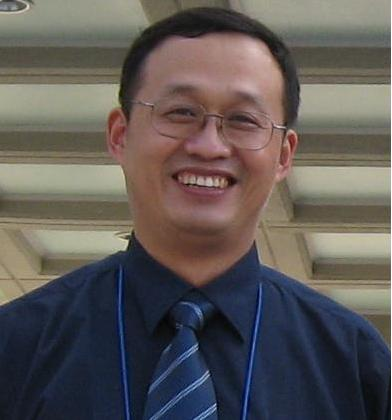

【个人简介】
- 姓名：李希友
- 性别：男
- 出生日期：1964年10月
- 学历：
- 职称：教授 （博导）
- 学术身份：
- 行政职务：
- 学术团体兼职：
- 研究类别：无机化学
- 工作单位：无机化学研究所
- 电话：0531-88369877
- 传真：
- 地址：
- E-mail: xiyouli@sdu.edu.cn
|
 |
【学习及工作经历】
- 1981-1985:聊城师范学院化学系 理学学士
- 1985-1988:机械委第204研究所 工学硕士; 含能材料专业,导师: 李富平研究员
- 1988-1995: 山东师范大学化学系 助教, 讲师
- 1995-1998: 中科院感光化学研究所, 博士, 光化学.导师: 许慧君教授
- 1998-2000: 香港中文大学化学系, 博士后, 导师: Dennis K. P. Ng
- 2000-2001: Imperial college of Science, technology and medicine, London; Postdoctor, Director: Prof. Nick Long.
- 2001-2002: Universität Bonn, Institute für organic und Bio-oganic chemie, Humbodt research fellow, Director: Prof. Fritz Vögtle.
- 2002-2004: Northwestern University, Department of Chemistry, institute of nanofabrication, research associate, Director: Prof. Michael Wasielewski
- 2004-至今 作为引进人才受聘于山东大学化学与化工学院
|
【主讲课程】
- Photochemistry and Photofunctional material
- Supramolecular photochemistry
|
【研究领域和兴趣】
- 超分子光化学
- 超分子光化学是超分子化学和光化学的交叉学科, 主要内容是运用超分子的手段组装具有有序超分子结构的体系, 研究这些超分子中染料分子的光化学性质的改变. 研究的主要目的是模拟自然界的光合作用, 为将来的人工光合作用的实现提供理论基础.
- 聚集体化学
- 主要研究在溶液和薄膜中,有序聚集体的制备和光电性质的研究. 目前开展的主要工作是通过分子设计, 集合多种的超分子作用于一个分子内, 通过自聚集形成有序的固体薄膜, 将这些高质量的薄膜制备成分子电子器件(如:场效应晶体管, 光伏电池等),研究分子结构和性质之间的关系. 寻找高性能的分子电子材料.
- 光电转化与有机太阳能电池
- 以光化学基本原理中的最新研究成果为基础，以改善有机太阳电池的光收集效率为目标，设计合成一系列的有机染料分子，并将其应用于有机太阳能电池中，以改善电池的光电转化效率，最终实现有机太阳能电池的实用化。
|
【主要论著】
- SCI收录论文60多篇, 他引500余次， 代表性的近期论文;
- 2010年
- 1. Haixia Wu, Haixia Wang, Lin Xue, Yan Shi, and Xiyou Li* "Hindered Intramolecular Electron Transfer in Room-Temperature Ionic Liquid" J. Phy. Chem. B. ASAP 10.1021/jp101240a
- 2. Junqian Feng, Delou Wang, Shuangqing Wang,* Liangliang Zhang, Xiyou Li*, "Synthesis and Properties of Novel Perylenetetracarboxylic Diimide Derivatives fused with BODIPY Units" Dyes and Pigments, 2010 (in press)
- 3. Lin Xue, Yanfeng Wang, Yanli Chen, Xiyou Li,* "Aggregation of wedge-shaped perylenetetracarboxylic diimides with a different number of hydrophobic long alkyl chains" Journal of Colloid and Interface Science 2010, 350, 523–529
- 4. Xiyou Li,* Haixia Wang, Haixia Wu "Phthalocyanines and Their Analogs Applied in Dye-Sensitized Solar Cell" Struct Bond. 2010, 135: 229–274 （invited review）
- 5. Hiaxia Wang, Haixia Wu, Lin Xue, Delou Wang, Xiyou Li* "Turn-On" Fluorescence Chemosensors Selective for Nickel(II) and Iron(III) Based on Perylene Tetracarboxylic Diimide" Org. Biomol. Chem. 2010, 8, 1017-1026.
- 2009年
- 6. *Yanfeng Wang, Hailong Chen, Haixia Wu, Xiyou Li,* Yuxiang Weng*, "Fluorescence Quenching in a Perylenetetracarboxylic Diimide Trimer" J. Am. Chem. Soc., 2009, 131 (1), 30-31.
- 2008年
- 11. *Junqian Feng, Baolong Liang，Delou Wang，Haixia Wu, Lin Xue, Xiyou Li,* "Synthesis and Aggregation Behavior of Perylenetetracarboxylic Diimide Trimers with Different Substituents at Bay Positions" Langmuir 2008, 24, 11209-11215.(IF 4.0)
|
【科研项目】
- 2004,11-2007, 11, 山东大学科研启动基金, 项目负责人, 经费10万元
- 2006,01-2008, 12, 国家自然科学基金, 项目负责人, 经费35万元
- 2007，01-2009，12，国家自然科学基金国际交流项目，项目负责人，经费25万元
- 2007，01-2007，12，教育部留学归国人员科研启动基金，项目负责人，经费2.95万元。
- 2008, 01- 2010,12, 国家自然科学基金，面上项目，负责人， 28万元
- 2008，01-2010， 12， 博士点基金， 6万元
- 2011，01-2013，12， 国家自然科学基金，面上项目， 负责人， 36万元
|
|
|
|
|
【联合培养情况】
- 研究组与Northwestern university; North Dakota university; The Chinese university of Hong Kong; Free University of Berlin; Bonn university; Imperial College of Science, technology and Medicine, London; 中科院化学所以及中科院物理所等研究单位有长期稳定的合作关系。
|
【拟招收研究生情况】
- 2011年拟招收硕士和博士研究生各两名。研究生毕业生适合在化学，材料等相关的大专院校，科研机构或企业工作。条件合适的可推荐到国外相关大学或科研机构工作。
|